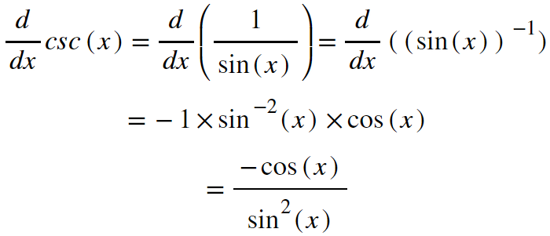

Back to Home
Keaton Hawkins AP Calculus AB Final
So far we've looked at how to handle sums, differences, products, quotients, and compositions of functions, and we've discussed the derivatives of monomials and exponentials as the simple functions that are combined using these operations. There are, however, many other types of functions out there: trigonometric, inverse, inverse trigonometric, and logarithms, to name a few. For the scope of this website, we're only going to get into the six circle-based trigonometric functions (we're ignoring the hyperbolic ones, that is.) I mentioned on the chain rule page that the derivative of sin(x) is cos(x). My goal here is to show not only why that is true, but why it actually makes perfect, natural sense. Let's consider the graph below:
The red curve is the graph of sin(x), and the blue one is the graph of cos(x). Notice: the graph of sin(x) has a slope of zero at each crest and trough, right? Look at the graph of Cosine. At every point on the x axis where sin(x) has a crest of trough, that is, at every point where the instantaneous slope of sin(x) is zero, the value of the cosine function is zero. Now, pick a crest on the sine wave. As you move from left to right, the sin function is decreasing from that crest until the next trough, right? That means at every point within that range, its slope is negative. Now look at the cosine graph within that same range. It's value is negative. Below the x-axis, that is. And the same is true for the ranges where the sin graph is increasing, or has a positive slope. In those ranges, the value of the cosine function is positive, or above the x-axis.
So certainly, cos(x) seems like it would be a great candidate for the derivative of sin(x). But why is it exactly cos(x)? Why not some other type of function that happens to have the same properties mentioned above? To answer that, let's take a look at our unit circle:
In the unit circle shown, a radius has been drawn that creates an angle, 𝚹 radians, with the x-axis. Because the raidus of the circle is one, 𝚹 is also the length of the arc intersected by the angle (the purple part of the circle). Drawing a line straight down to the x-axis from the point where the radius intersects the circle creates a triangle. sin(𝚹) is defined to be equal to the side opposite the angle divided by the hypotenuse. In this case, our hypotenuse is the radius radius of the circle, 1. So, sin(x) is just equal to the height of that triangle leg, or the y-coordinate of the point at which the radius intersects the circle. For our derivative, let's consider how a slight nudge in the value of the input, some infinitesimal d𝚹, affects the output of the function. This change in the output will be called d(sin(𝚹)). So as usual, we want to find the slope created by dividing d(sin(𝚹)) by d𝚹:
Remember, because the radius of the circle is 1, the angle that intersects a given arc is equal to the arc length. So, in our diagram above, our slight change to the input angle, d𝚹, can be thought of a slight movement along the arc of the circle. As shown by the triangle in dashed lines, this movement along the circle creates a change in the height above the x axis. Because the sin function is the height above the x-axis, this change is equal to d(sin(𝚹)). By the way, this new dashed-line triangle we've created is similar to the original triangle we had. As such, I labeled the original angle 𝚹 in the top left corner of the triangle. Now let's look for the ratio we're after: d(sin(𝚹)) / d𝚹.
In our new dashed-line triangle, d(sin(𝚹)) is the leg adjacent to the angle, and d𝚹 is the hypotenuse. So d(sin(𝚹)) / d𝚹 is the adjacent side / the hypotenuse. And that's exactly the definition of cosine! By SOH-CAH-TOA, cosine equals "adjacent over hypotenuse" which, by our analysis above, equals d(sin(𝚹)) / d𝚹, the derivative of sin(𝚹). Coolio!
The same analysis technique can be used to find the derivative of cos(𝚹). Notice that in that case, we're considering a change in the horizontal direction. When we nudge the input by d𝚹, our new point moves leftward towards the y-axis. So, the derivative of cos(𝚹) ends up being -sin(𝚹), not sin(𝚹). One more thing to note: you might be thinking that the "dashed-line" triangle isn't actually a triangle because its "hypotenuse" is an arc, not a line. But remember, d𝚹 is drastically exaggerated on our diagram for the sake of illustrating the point. In reality, we can think of it as going to zero. The smaller it gets, the more closely the intersected arc resembles a straight line. In its full infinitesimal glory, d𝚹 is no longer an arc.
Now that we know the derivatives of sin(x) and cos(x), we can use them in conjunction with our other rules to find the derivative formulas for the other four circle-based trig functions. For these derivations, we are going to need some affinity for simplifying trigonometric expressions. See the simple proofs below:
